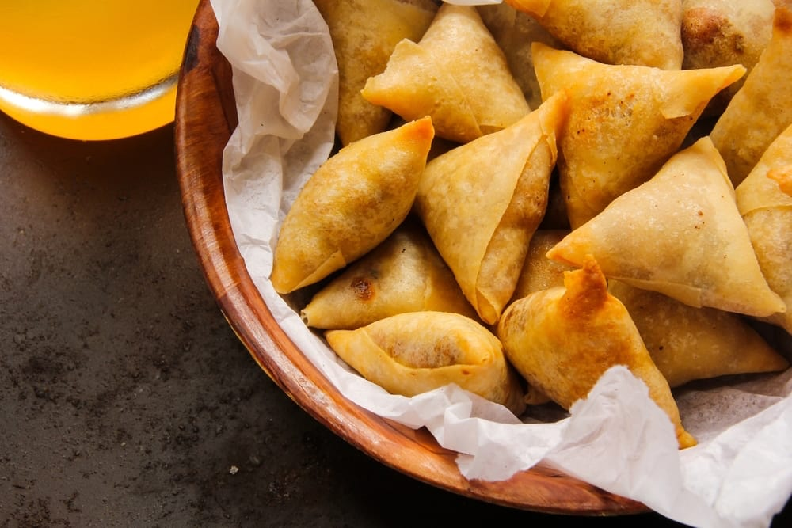

Although many think the samosa originated in South Asia, its roots can be traced back to Central Asia & the Middle East.
In Arab cookbooks dating from the 10th to 13th centuries, pastries were referred to
as 'sanbusak,' derived from the Persian term 'Sanbosag.'
Ingredients

For the filling
1 pounds ground beef/lamb
2 tablespoons oil
1 small onion, chopped
2 teaspoons coriander powder
2 tablespoons cilantro, finely chopped
green onion, chopped
2 teaspoon cumin powder
2 teaspoon cardamom powder
1 teaspoon salt
1 teaspoon pepper
1 green chili
1 clove garlic, minced
oil for frying
For the flour paste
¼ cup all-purpose flour
¼ cup water, or as needed
For the Sambusa Wrappers
3 cups plain all-purpose flour
2 table spoon oil
1 cup Luke warm water
a pinch of salt
Directions
Mix the flour, oil, and the salt while using a fork amd mix in the water slowly.
Knead the dough for 5-10 minutes until smooth and pliable.
Form the dough into a ball and coat the top with oil. Cover and set it aside for about 15 minutes.
Heat a skillet on a medium-low heat.
Knead the dough again and divide it into 8 equal portions. Form 8 balls with these sections.
Take two balls and roll them out until they are around 5 inches in diamater. Brush one of the halves with oil and press the other half on top. Roll this new stack out until the dough measures around 10 inches in diameter.
Cut into four pieces with a sharp knife; roll each piece again so it keeps its shape.
Place each piece on the warm skillet and leave it on one side until it dries out, and then flip and repeat on the other side (make sure you don't leave it too long; you don't want to cook it).
Remove and let them cool slightly; then pull apart each wrapper slowly, to not tear them.
Cover with a towel and continue to repeat the same steps until you have finished all pieces.
Filling
Cook the meat in a skillet with a little oil on a medium heat.
Add the onions and green chili; stir until tender
Add coriander, cumin, cardamom, salt, pepper, garlic, green onion, and the cilantro. Cook for few minutes.
Let the filling cool until it is room temperature.
Flour Paste
In a small bowl, mix flour and water until you are left with a smooth paste.
Assembly
Hold one of the sambusa wrapper to form a cone shape, and then seal it with flour paste.
Add the filling to the cone and close and seal the top with the flour paste to form a triangle.
Pinch the edges so that it is completely sealed.
Fill the rest of the sambusas.
Heat oil in a frying pan, and then fry the sambusas until golden brown.